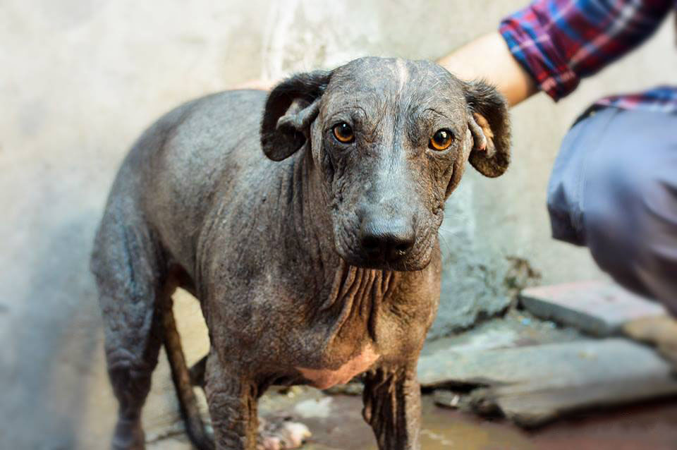

Vos podés ser la persona favorita de alguno de ellos.
Déjate adoptar.

•8 años•
Macho
-16 kilos-
Muy alegre y simpático
•6 años•
Macho
-19 kilos-
Miedoso y demodéxico
•6 años•
Macho
-7 kilos-
Tranquilo y sociable
•8 años•
Hembra
-16 kilos-
Muy simpática y alegre
•11 años•
Hembra
-10 kilos-
Compañera (ciega)
•7 años•
Hembra
-10 kilos-
Muy tranquila y demodéxica
•6 años•
Hembra
-9 kilos-
Muy sociable y juguetona
•8 años•
Macho
-6 kilos-
Miedoso y simpático
•8 años•
Macho
-15 kilos-
Muy activo y sociable
•9 años•
Hembra
-14 kilos-
Tranquila y miedosa
•8 años•
Macho
-7 kilos-
Alegre y demodéxico
•10 meses•
Hembra
-20 kilos-
Alegre y sociable
•6 años•
Hembra
-11 kilos-
Tranquila y simpatica
•6 años•
Hembra
-19 kilos-
Muy dulce y demodéxico
•7 años•
Hembra
-16 kilos-
Tranquila y compañera
•9 años•
Macho
-10 kilos-
Miedoso y tranquilo
•9 años•
Macho
-6 kilos-
Sociable y cariñoso
•8 años•
Hembra
-16 kilos-
Muy dulce y demodéxica
•5 años•
Hembra
-16 kilos-
Alegre y dulce
•6 años•
Hembra
-12 kilos-
Tranquila y simpática
El color de Carmen
Convivir con más de 80 perros en una precaria vivienda desató una reacción en su cuerpo que la dejó sin pelo; el miedo, la sumisión y la desconfianza marcaron sus primeros años de vida. Pero su suerte cambió y tuvo una segunda oportunidad.
Carmen nació un día frío y nublado de julio sin saber que un duro camino iba a tener que recorrer desde el momento en que abriera sus ojos. Su mamá había sido rescatada del abandono, la indiferencia y el maltrato por una mujer humilde que, con pocos recursos, se ocupa de atender a perros en situación de calle en una precaria casa de Valentín Alsina donde se cruza con Pompeya. Allí, en ese costado olvidado del cordón que une el Gran Buenos Aires con la Ciudad, la mujer convive con más de 80 perros que, aunque tienen alimento y atención veterinaria, no conocen lo que es pisar el pasto o dormir en una cama.
» A Carmen la conocimos gracias a la inconmensurable labor que realiza Mónica Pavesio, una proteccionista de Lanús, que nos había alertado sobre la situación de los perros en esa casa. El día que la vimos por primera vez fue cuando nos acercamos con María Paula Filippelli a sacar fotos de los perros y ayudar a encontrarles familia y hogares de tránsito. Entre todos esos perros y perras, sin pelo y con muchísimo miedo, se encontraba Carmen«, recuerda Federico Sordo, uno de los involucrados en el caso.
Los perros y las perras de la casa de Valentín Alsina habían logrado efectivamente mejorar su salud y recuperar peso gracias al trabajo de Mónica Pavesio. Carmen, al igual que sus pares, estaba castrada, vacunada y desparasitada. La particularidad de ella que llamaba la atención por ser cachorra, y la de cinco perros que aún se encuentran en la casa, es que no tenía pelo. ¿El motivo? Una demodexia -una enfermedad que se caracteriza por la caída del pelo y la inflamación de la piel- que ya se había hecho crónica. » En algunas partes de su cuerpo parecía que tenía piel de elefante. Seguir viviendo en la casa de Alsina no era una opción para que ella pudiera sanar, por ese motivo fue decidimos brindarle un hogar de tránsito«, detalla Federico, que abrió las puertas de su departamento para que la perra pudiera sanar su cuerpo, mente y emociones. «Durante el viaje de la casa de Alsina a mi departamento no dejó de llover en todo el trayecto. Cada gota que caía la interpretamos como el bautismo a su nueva vida», agrega.

Carmen antes | La indiferencia mata
Carmen después | El amor cura
Cuando llegó a la casa de Federico, Carmen era la personificación del miedo, la inseguridad, la desconfianza, el pánico, la sumisión y la tristeza. «Se la pasaba temblando. Sabíamos que la verdadera Carmen se encontraba a varias horas, días, semanas y meses para sanar su miedo ante los humanos. Y, al conocer más de su triste historia entendimos un poco su presente. Carmen había llegado a la casa de Valentín Alsina dentro del útero de su madre. Vivió toda su corta vida rodeada de muchos perros, rodeada de estrés. Nunca había conocido otra cosa, ni pisado el pasto o recibido una caricia que calmara sus miedos»
»Dejarme adoptar por Carmencita, una perra de aproximadamente 5 años, fue una experiencia hermosa y que recomiendo de todo corazón experimentar. El amor es una construcción diaria; el amor no entiende de cachorros o perros adultos. El amor no entiende de mambos» relata Federico.
El amor entre nosotros fue creciendo en paralelo a lo que duró su tiempo en casa, hasta que un día ocurrió lo que tenía que ocurrir: ella me había adoptado.
—Fede Sordo
Carmencita ahora es parte de la familia de Federico, pero muchos perros y perras que quedaron en la casa siguen esperando la misma oportunidad. Gracias al trabajo en equipo de @lapandillademoni algunos fueron adoptados, pero esa ayuda no es suficiente. Esos perritos y perritas necesitan que más personas se involucren para cambiar su realidad.
Te invitamos a seguir y apoyar a @lapandillademoni, donde podés ayudar a alimentar a los amigos y a las amigas de Carmencita que siguen esperando la oportunidad de tener su familia.